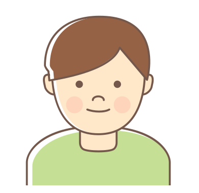

a
Animation
Les animations dans CSS permettent de faire bouger des éléments par des interpolations, en fonction des règles qu'on leur attribue. Les animations sont appliquées sur le carré bleu qui comporte les class item et animate.
La propoiété "animation" peut attendre plusieurs valeurs: le nom de l'animation (obligatoire), la durée (obligatoire), le nombre de fois qu'elle sera répétée(obligatoire), la fonction de timing, la direction de l'animation...
Pour faire fonctionner une animation, il faut la définir grace à des keyframes. On déclare les keyframes sous le nom de l'animation.
Rebondir
.item.animate {
animation: bounce 1s ease-in-out infinite;
}
@keyframes bounce {
0%, 100% {
left: -60px;
}
50% {
left: 60px;
}
}
Changer de couleur
.item.animate {
animation: change-color 1s ease-in-out infinite;
}
@keyframes change-color {
0%, 100% {
background-color: blue;
}
50% {
background-color: green;
}
}
Un beau mélange !
.item.animate {
animation: all-change 1s ease-in-out infinite;
}
@keyframes all-change {
0%, 100% {
background-color: var(--blue);
opacity: 100%;
border-radius: 4px;
transform: rotate(0deg)
}
50% {
background-color: var(--red);
opacity: 20%;
border-radius: 100px;
transform: rotate(45deg)
}
}
b
Background
CSS permet de faire beaucoup de chose avec le fond. On peut utiliser des images, les déformer, les répéter, les rendre fixes... Voici quelques options pssibles:
Fond fixe
Pour cet exemple, on cible la div avec la class .fixed-background.
.fixed-background {
background-image: url();
background-attachment: fixed;
background-size: 200px;
}
Fond qui se répète
Maintenant, essayons un fond qui se répète.
.repeat-background {
background-image: url();
background-size: 300px;
background-repeat: repeat;
background-position: 150px;
}
Fond qui couvre tout
La valeur cover est très bien pensée, elle couvre la totalité de l'écran tout en restant la plus petite possible et sans être étirée.
.cover-background {
background-image: url();
background-size: cover;
}
Border
Les bordures peuvent être très personnalisées dans CSS.
Styles de bordures
Quand on définit une bordure, on dt choiri 3 paramètres : la largeur, le style et la couleur. Quelques exemples :
Bordure simple
.border1 {
border: 1px solid black;
}
Bordure double
.border2 {
border: 5px double green;
}
Bordure pointillée
.border3 {
border: 2px dashed red;
}
Border-radius
La propriété border-radius permet d'arrondir les coins. On peut définir plusieurs valeurs, de 1 à 4, qui correspondent à chaque coin. Une seule valeur = tous les coins, 2 valeurs = haut gauche et bas droit, 4 valeurs = haut gauche, haut droit, bas droit, bas gauche.
Arrondi partout
.border4 {
border: 2px solid black;
border-radius: 40px;
}
Forme étrange
.border5 {
border: 2px solid black;
border-radius: 18px 56px 25px 4px;
}
Générateur de bordures
Avec le générateur de bordures de MDN, on peut créer des bordure originales facilement.
Générateur de borduresBordure générée
.border6 {
border: 2px solid green;
border-radius: 0px 150px 150px 50px / 0px 30px 100px 30px;
}
c
Couleurs
Les couleurs dans CSS sont de plus en plus variées et on peut les personnaliser à l'infini.
Couleurs nommées
On peut choisir les couleurs en indiquand simplement leur nom (en anglais). Le choix est déjà très varié.
.item.lightseagreen {
background-color: lightseagreen;
}
Couleurs RGB
On peut choisir les couleurs en RGB. Une infinité de couleurs sont disponibles.
.item.rgb {
background-color: rgb(255, 183, 50);
}
Couleurs RGBA
On peut ajouter de la transparence avec le A (alpha) après le RGB. En CSS, on peut aussi faire glisser le curseur à droite de la palette.
.item.rgba {
background-color: rgba(146, 0, 169, 0.557);
}
Couleurs HEX
Et bien sûr, on peut choir les couleurs avec un code hexadécimal.
.item.hex {
background-color: #FF2D54;
}
d
Display
On utilise très souvent la propriété display. Elle permet de définir le type d'affichage, parfois sur l'élément lui même, parfois sur ses enfants.
Il existe une multitude de valeurs pour display, voici les plus utilisées:
Display Inline
display: inline fait qu'un élément s'affiche sur une même ligne. Il a une largeur qui ne dépasse pas son contenu.
p {
display: inline;
}
Display Block
display: block prend toute une ligne, même si le contenu est petit.
p {
display: block
}
Display None
display: none fait que l'élément ne s'affiche pas. Si on le compare avec visibility: hidden, il est vraiment absent alors que visibility:hidden est caché.
p {
display: none
}
Display Flex
display: flex transforme un conteneur en boîte flexible, permettant de disposer et d'aligner ses éléments enfants.
div {
display: flex
}
Display Grid
display: grid permet aussi de disposer les éléments enfants selon une grille.
Griddiv {
display: grid
}
e
Pas de contenu pour l'instant !
f
Filters
La propriété CSS filter permet d'appliquer un filtre à une image, une icône, un arrière plan, une bordure ou autre. Pour cet exemple, on utilise des image en format SVG qui contiennent la class img-filter.
Flou
.img-filter { filter: blur(3px); }
Contraste
.img-filter { filter: contrast(200%); }
Gris
.img-filter { filter: greyscale(80%); }
Couleurs inversées
.img-filter { filter: hue-rotate(90deg); }
Ombre portée
.img-filter { filter: drop-shadow(5px 5px rgb(123, 123, 123)); }
Sépia
.img-filter { filter: sepia(80%); }
g
Gradient
Grace à CSS, on peut appliquer des dégradés de plusieurs sortes. Dans ces exemples, on l'applique à une div qui comporte la class gradient.
Dégradé linéaire
.gradient {
background: linear-gradient(blue, purple);
}
Dégradé radial
.gradient {
background: radial-gradient(red, yellow);
}
Dégradé répétitif
.gradient {
background: repeating-radial-gradient(green, orange 30px);
}
Dégradé cônique
.gradient {
background: conic-gradient(yellow, purple);
}
Grid
La grille permet de positionner les éléments d'une page grace à une grille. Elle fonctionne avec la propriété display. Pour cet exemple très simple, on utilise la class .container sur le container parent et .item-grid sur le container enfant.
Chaque section de ce site est d'ailleurs affichée grace à cette propriété. C'est une bonne méthode à utiliser avec les media queries pour changer l'interface en fonction de la taille des écrans.
Le code de l'item est toujours le même:
.item {
width: 50px;
height: 50px;
background-color: purple;
border-radius: 4px;
}
Trois colones
.container {
background-color: yellow;
border-radius: 4px;
gap: 0.5rem;
padding: 0.5rem;
display: grid;
grid-template-columns: repeat(3, 1fr);
}
Quatre colones
.container {
background-color: yellow;
border-radius: 4px;
gap: 0.5rem;
padding: 0.5rem;
display: grid;
grid-template-columns: repeat(4, 1fr);
}
Six colones
.container {
background-color: yellow;
border-radius: 4px;
gap: 0.5rem;
padding: 0.5rem;
display: grid;
grid-template-columns: repeat(6, 1fr);
}
h
Pas de contenu pour l'instant !
i
Pas de contenu pour l'instant !
j
Pas de contenu pour l'instant !
k
Pas de contenu pour l'instant !
l
Pas de contenu pour l'instant !
m
Mix-blend Mode
La propriété mix-blend-mode définit la façon dont le contenu d'un élément doit se mélanger avec son arrière-plan. Elle agit un peu comme un filtre. Il existe beaucoup de valeurs différentes possibles.
Pour ces exemples, on a appliqué une image de fond à une div et une couleur au texte à l'interieur de la div. On applique la propriété sur le texte.
Darken
Garde les tons foncés de chaque calque.
Darken
p.darken {
mix-blend-mode: darken;
}
Difference
Soustrait la valeur du calque de fond de la valeur du calque du dessus.
Difference
p.difference {
mix-blend-mode: difference;
}
Multiply
Multiplie la valeur de chaque pixel correspondant entre le calque du dessous et celui du dessus.
Multiply
p.multiply {
mix-blend-mode: multiply;
}
n
Pas de contenu pour l'instant !
o
Opacité
La propriété "opacity" définit la transparence d'un élément. Dans cet exemple, on l'applique à une div qui contient la class item.
100%
.item {
opacity: 1;
}
50%
.item {
opacity: 0.5;
}
10%
.item {
opacity: 0.1;
}
p
Picture
La balise picture est très utile pour le côté responsive. Elle sert à changer l'image en fonction de la taille de l'écran. On peut, par exemple, changer une image de format portait (mobile) pour paysage (desktop) ou simplement pour charger une image moins lourde pour un petit écran.
<picture
<source media="(min-width: 1024px)" srcset="url">
<source media="(min-width: 768px)" srcset="url">
<img src="url" alt="text">
</picture>
En savoir plus
q
Pas de contenu pour l'instant !
r
Pas de contenu pour l'instant !
s
Pas de contenu pour l'instant !
t
Transform
La propriété Transform permet de transformer un élément grace au CSS. Dans nos exemples, la forme initiale est un carré bleu aux coins arrindis. Il contient la class item. Voici quelques transformations:
Pivoter
.item { transform: rotate(45deg); }
Modifier l'échelle
.item { transform: scale(0.7); }
Incliner
.item { transform: skew(45deg); }
Ajuster les propriétés sur l'axe des Y seulement
.item { transform: skewY(20deg); }
Étirer une forme
.item { transform: scaleX(2); }
En bref, créer n'importe quoi !
.item { border-radius: 50px; transform: rotate(90deg) scaleY(1.5) skewY(40deg) }
Transition
Les transistions permettent de modifier la vitesse d'une animation, y compris des animations implicites telles que le survol.
La propriété "transition" est une propriété raccourcie de "transition-property" et "transition-duration". On peut aussi ajouter des valeurs qui vont impacter le délai et la temporalisation.
Voici quelques exemples :
Sur du texte
Survole moi
.transition {
color: red;
transition-property: font-size, color;
transition-duration: 2s;
}
.transition:hover {
font-size: 30px;
color: blue;
}
Sur une forme
.transition {
transition:
width 1s,
height 2s,
background-color 3s,
border-radius 1s
}
.transition:hover {
width: 120px;
height: 100px;
background-color: var(--yellow);
border-radius: 500px;
}
Avec du délai
Survole moi
.transition {
color: red;
transition: all 2s ease-in-out;
transition-delay: 1s;
}
.transition:hover, {
font-size: 30px;
background-color: purple;
color: white;
transform: rotate(180);
}
u
Pas de contenu pour l'instant !
v
Variables
Les variables sont très utiles pour un gros projet. Il suffit de changer une fois la valeur pour qu'elle s'applique partout.
Déclaration d'une variable
Pour définir une variable, on l'écrit au début notre ficher CSS. Pour cet exemple, on définit une variable de couleur.
--green: #71A167;
Utilisation
Pour l'utiliser plus tard dans le code, on l'écrit comme suivant:
background-color: var(--green);
w
Writing Mode
La proriété writing mode permet d'écrire à l'horizontal, à la verticale, les lettre penchées ou droites. C'est surtout utile lorsqu'on écrit dans des langues étrangères.
À la verticale
On peut ajouter lr ou rl après vertical. lr va alligner les lettre à gauche et rl à droite.
Je suis vertical
.writing1 {
writing-mode: vertical-lr;
}
À la verticale, lettres droites
Combiné avec la propriété text-orientation, le texte est vertical mais les lettres sont dans le bon sens.
Je suis vertical
.writing2 {
writing-mode: vertical-lr;
text-orientation: upright;
}
x
Pas de contenu pour l'instant !
y
Pas de contenu pour l'instant !
z
Z-index
Le z-index permet de définir dans quel ordre les éléments sont affichés à l'écran, un peu comme des calques.
Pour bien représenter cet exemple, les images se chevauchent grace à la propriété position.
Sans changement de z-index
Comme le garçon a lunettes est positionné en premier, il se retrouve naturellement derrière les autres.
#garcon-lunette {
position: relative;
left: 0px;
}
#fille-blonde {
position: relative;
left: -60px;
}
#garcon-roux {
position: relative;
left: -120px;
}
Z-index inversé
En modifiant le z-index des personnages, on va les placer dans l'ordre inverse. Le nombre le plus élevé est celui qui va se retrouver au premier plan.
#garcon-lunette {
position: relative;
left: 0px;
z-index: 3;
}
#fille-blonde {
position: relative;
left: -60px;
z-index: 2;
}
#garcon-roux {
position: relative;
left: -120px;
z-index: 1;
}
Les filles devant !
On peut bien sûr mettre les filles en avant !!
#garcon-lunette {
position: relative;
left: 0px;
z-index: 2;
}
#fille-blonde {
position: relative;
left: -60px;
z-index: 3;
}
#garcon-roux {
position: relative;
left: -120px;
z-index: 1;
}